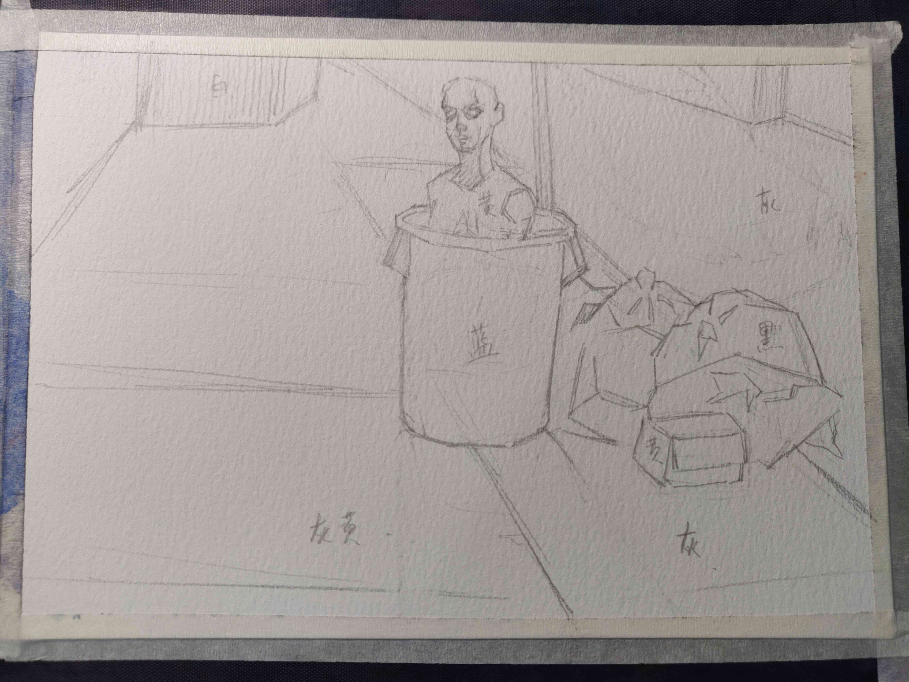

找主题
Contents
找主题#
- startat
2021-03-19
- endat
2021-10-23
- status
Finished
课程#
第一讲 西方传统艺术#
主题线索
将眼见的世界描绘出来的欲望 现实主义 风景静物
将眼不可见的世界描绘出来的欲望 观念主义 故事画
时间线索
史前壁画
神话 爱琴文明 荷马史诗
现代主义 形式主义 为绘画而绘画
第二讲 中国传统艺术#
生死观 东汉生死观 荆轲刺秦王
论道 永乐宫壁画
论佛 敦煌 哈密 喀什
维护统治 帝王画
划分阶层 风雅 文人画
传播儒学
第三讲 当代艺术主题 时间主题#
相比传统艺术，更多元，更个人。
当代艺术的主题：
时间主题
空间场所主题
…
荐书《当代艺术的主题：1980年以后的视觉艺术》
王光乐#
国际知名艺术家
水磨石：苦恼，困顿，消磨时间，悟道
寿漆：从容的生死观
一遍又一遍地认真覆盖：自我锤炼、真诚、时间
和解读无关 - 和艺术家的作为有关
禅宗启发的观念艺术。
谭平#
央美设计学院院长
谭平父亲的癌细胞切片引发的思考 生死观 人的衰败过程
十分钟工作制生发的抽象画面：
真诚
不要抱怨没时间
时间的表现方式：
多幕式：戏剧帷幕 - 组画 - 用物象分割：山、墙、屏风 - 统一物象的不同状态
定格式：选取瞬间
象征法：代表时间的象征物：钟、沙漏、万字（卐）
挪用现成品
时间的特质：
情感：怀旧、流逝、腐烂、衰老、死亡
时间的具体化
不稳定材料的使用
承载时间的物品：档案、文物、收藏品、纪念物、裂痕
手段：加热 腐蚀 流动 融化
象征物：上述
马克奎恩#
- Self
用自己冰冻的血液雕刻成头像
个体生命对外在环境的依赖性和极端脆弱性
威廉肯特里奇#
生活在非洲的白人艺术家，主题主要来自南非种族隔离时代，以及欧洲文学
洞穴理论
参见
杜马斯
翁贝特波丘尼#
未来主义
巴拉
贾霭力
- 张小涛 （腐败的草莓）
佛洛伊德（长久的写生）
陈友桐（霉菌艺术）
谢德庆（户外生存一年）
徐冰（蚕和桑、此处无一物，何故染尘埃）
约翰凯奇，激浪派（with 草间弥生）（4 分 33 秒）
达利
邱志杰 （一千遍兰亭序）
夏宇(?) （坦培拉，老照片）
张桓（香灰）
玛丽娜 阿布哈莫维奇（无言对视）
基弗
高速摄影
待处理
还没看
艺术家案例 - 刘小东#
艺术家案例 - 怀斯#
艺术家案例 - 霍伯#
第四讲 身份主题#
与身份关系密切的传统艺术形式：
肖像画 画面中会用各种道具暗示人物身份
特别地，自画像：自我观察 表达欲望 暴露自己
雕像
荐书《肖像的凝视》
艺术家维度#
小技巧
伦勃朗、鲁本斯、丢勒、🧑🎨文森特·梵高 都是艺术史上画自画像相当多的画家
被构建的身份#
或者说「身份总是被构建的」。
种族身份 黑人 犹太人 亚洲人
性别身份 男权 女权 跨性别者 性少数者
障碍身份 残疾人 传染病患者 抑郁症患者
- 政治身份 当权者 达官
古埃及 法老雕像
中国古代 历代帝王像
中国人的身份情节#
阶序意识
身份压力（地位和行为的匹配）
主仆情节（关于强者和弱者的态度）
人际关系中的定位（区分内外、善恶）
消解身份的政治正确#
当身份产生时，作为消解身份的政治正确也产生了。
种族问题、女权问题、性少数问题、性别认知问题都存在不同程度的「政治正确」。
第四讲 哲学主题#
- date
2021-05-21
认识你自己 ——苏格拉底
荐书
《西方哲学史》 詹姆斯 菲泽
《中国哲学简史》冯友兰
《苏菲的世界》
哲学如何启发艺术
柏拉图#
理念论#
概念本身，心灵或理智所「看」到的东西
可知世界与可感世界
- 约瑟夫 库苏斯《一把椅子和三把椅子》
观念的椅子
哲学之后的艺术——观念艺术
雷尼 玛格丽特《这不是烟斗》
洞穴理论#
威廉 肯特里奇 南非的白人艺术家 引申政治
三段论#
禅宗#
禅是「洞察自己本质的艺术，它指明了从束缚到自由的道路」 ——铃木大拙
由铃木大拙传入，深刻影响美国当代艺术
为极简主义提供新的出路
- 激浪派
- 约翰凯奇《4 分 33 秒》
作曲家对自身的抽离，沉默代表着禅宗的虚无
草间弥生 小原野子
- 消除人的欲望，呈现自然的随机性
格哈德里希特
贾思伯琼斯 《美国国旗》
存在主义#
荒谬与存在主义
加谬 《木屋与独舟》
彼得多伊格
尹朝阳《西西弗斯的神话》
总结#
清晰的概念为思考（创作）提供牢靠的基础
每个事物都有其功能与目标
拉大尺度看问题，德行与知识等同 恶性与无知等同
艺术家案例 尹朝阳#
待记录#
待处理
待记录
艺术家案例分析 杜马斯#
作业点评 牛永琦 李瑞#
- date
2021-06-25
其实是 找自己 的作业了。
牛永琦#
数字绘画，功底扎实，画面完整。
文字非常有意思：
我身体的细胞在噼里啪啦地死去。
李瑞#
纸本，情绪饱满，画面充分度欠。
艺术家案例分析 迪本科恩#
🧑🎨理查德·迪本科恩 对形式语言的研究，用人体的形状来切割画面
形式语言的基本逻辑：
对抗与转化
同元素的重复
荐书
贡布里希：
艺术与视错觉奥恩海姆：
视觉思维艺术与视知觉
艺术家案例分析 巴尔蒂斯#
🧑🎨巴尔蒂斯 「在画面中描述一种暧昧的状态」。
非科班，却深受古典主义影响。
浮世絵
主题选择的策略。
风格：浮雕化，硬边。
和 尼德兰画派 对比。
参见
李桂君
作业点评 邢蓓 楼奕#
- date
2021-07-16
艺术家案例分析 卡洛林沃克 和 贝基苏斯#
- date
2021-07-23
把创作的目光拉回现实。
🧑🎨卡洛林沃克#
无形之物拘禁下的女性。
机械时间所滋生的倦怠。
形式感。
有 🧑🎨理查德·迪本科恩 的影子。
不要闭门造车，大师的信息来源从来不是闭塞的。
大意：从熟悉，离自己最近的的地方生发出艺术 ——
🧑🎨安德鲁·怀斯
🧑🎨贝基苏斯#
更强的形式感。
作业#
以 xfczk2 为 ID。
- 要求：
- 主题：
- 2021-05-02 内窥
我在之前的画里常常描述对自己的审视，从一个（往往是负面的）想法出发，探寻藏在皮肤里面的自己，在这个系列里我要专注于此。
我一定不是自己看到的那样，这个世界不存在能看到整个我的眼睛。
- 2021-09-03 基本冲突
让我感受到痛苦是什么？具体的事件只是表象。 表象之下可能是简洁的，剧烈的冲突。在意识到之前可能充耳不闻，而之后就会觉得显而易见。
然后呢？
- 2021-10-18
我尝试对此刻的痛苦进行快照，在纸上尽力还原这对简洁的冲突，一旦冲突在纸上成立，我就好像完成了什么似的，不管最后这个冲突能不能解决，我都能更放松一些，我知道我的痛苦从哪里来，也知道它们无法要我的命。
伪善与善#
- 编号
xfczk2-000
- 日期
2021-04-17
- 尺幅
- 媒介
- 画集
{kind=link}
伪善与善#
- 相麻
假設在某個地方，有神明存在。 神明做了一個實驗。那個實驗的目的，是想讓人變成善人。然後祂挑了一位青年， 作為實驗的樣本。
- 惠
然後呢？
- 相麻
在實驗一開始，神明創造一個那位青年的冒牌貨。 冒牌貨本身並不具備意誌，只會做出和真正的青年相同的行動。 神明認為隻要有另一個自己，或許就能透過客觀檢視自己的行為，讓人變成善人。
- 惠
如果是神明，那應該不用做實驗也能知道結果吧。
- 相麻
那位神明雖然幾近全能，卻非常無知。
- 惠
喔，為什麼？既然是全能，那應該也能讓自己變全知才對啊。
- 相麻
雖然曾經獲得足以被稱為全知的知識，不過祂馬上就舍棄那些知識。 所以祂變成一個幾近全能，卻也極度接近無知的神明。神明也是有很多苦衷的。
- 惠
好吧。總之神明做了一個創造善人的實驗，並做出某位青年的冒牌貨。
- 相麻
沒錯。可是青年的行動並沒有改變。雖然他絕對不算壞人，卻也沒到被稱為善人的地步。 冒牌貨也和他一樣，過著不算好也不算壞的生活。
- 惠
那神明滿意了嗎？
- 相麻
不，所以祂進行第二個實驗，神明對青年下了某種詛咒， 只要一看見悲傷的人，全身就會疼痛不已的詛咒。
- 惠
喔，那還真是不得了。
- 相麻
所以青年變得無法對悲傷的人置之不理。為了消除自己的疼痛 他對所有悲傷的人伸出援手。
- 惠
原來如此。然後呢？
- 相麻
青年的冒牌貨，也做了相同的行動。雖然不會全身疼痛不已 不過他被設計成會做出和青年一樣的舉動。所以青年和冒牌貨，都度過善人的一生 故事到這裏就結束了。
- 惠
神看見這個結果後，有怎麼樣嗎？
- 相麻
祂替青年和冒牌貨各自取了名字。
- 惠
什麼名字？
- 相麻
一個叫做善，另一個叫偽善。
- 惠
話說回來，相麻。這故事到底有什麼意義？
- 相麻
只是個比喻而已。為了讓你明白，自己是個一絲不苟的善人。
- 惠
到底要怎麼想，事情才會變成那樣？
- 相麻
惠。你覺得哪一邊是善，哪一邊是偽善？
- 惠
真正的青年是偽善，冒牌貨是善。
- 相麻
為什麼你會這麼認為？
- 惠
真正的青年是為了自己才幫助別人，冒牌貨則是在毫無任何打算的情況下助人。 不用想也知道，哪一邊是純粹的善。
- 相麻
不過真正的青年是按照自己的意思在行動，冒牌貨只是遵從本人而已喔？
- 惠
這並不構成問題。為了自己所做的行為，根本就稱不上是純粹的善。
… 3
这里我复述了上面的 矛盾 ，并附上自己的意见。
试解电车难题#
- 编号
xfczk2-001
- 日期
2021-04-19
- 尺幅
- 媒介
- 画集
{kind=link}
试解电车难题#
这里我描述一种 荒诞 ，我解不开题，只能装傻了。
HOW I LIVE#
- 编号
xfczk2-002
- 日期
2021-04-21
- 尺幅
- 媒介
- 画集
{kind=link}
HOW I LIVE#
我不善于休息，一直在不同的，互相重叠的上下文之间切换。
overhaed 非常大，有时会变得不是我自己。
疹子#
- 编号
xfczk2-003
- 日期
2021-04-27
- 尺幅
- 媒介
- 画集
{kind=link}
疹子#
我觉得浑身不舒服，什么都不想画，草草应付了事。
冰川领航员#
- 编号
xfczk2-004
- 日期
2021-05-02
- 尺幅
- 媒介
- 画集
{kind=link}
冰川领航员#
名字来自 📖水星领航员 ，但没什么关系。
我小心翼翼地驾驶着自己，光看水面上的部分没有用，它们一定关联着更潜意识的， 更不愿意被看到的某些东西。
内窥#
- 编号
xfczk2-005
- 日期
2021-05-02
- 尺幅
- 媒介
- 画集
{kind=link}
内窥#
把视线插入自己身体里，我能窥见自己吗？
在一边忙着 领航 的情况下。
求雨#
- 编号
xfczk2-006
- 日期
2021-05-10
- 尺幅
- 媒介
- 画集
{kind=link}
求雨#
没画好，所以什么都没有表达出来。
剥离#
- 编号
xfczk2-007
- 日期
2021-05-17
- 尺幅
- 媒介
- 画集
{kind=link}
剥离#
我把我不喜欢的东西慢慢地从身上敲下来。
变成更完美的我。
出行准备#
- 编号
xfczk2-008
- 日期
2021-05-23
- 尺幅
- 媒介
- 画集
{kind=link}
出行准备#
我不能游在干涸的河床上。
参见
鱼鱼的姿势参考了 安格尔 的《泉》，
构图上想有 🧑🎨爱德华·霍伯 那样的感觉，但最后啥也没有。
意识流分析#
- 编号
xfczk2-009
- 日期
2021-05-28
- 尺幅
- 媒介
- 画集
{kind=link}
意识流分析#
我意识到自己非物质的部分是由意识构筑的，意识又分为可控的小部分和不可控的大部分。小部分是普通意义上的「我」，大部分是湍急暗涌的潜意识。
西西弗斯的一天#
- 编号
xfczk2-010
- 日期
2021-05-29
- 尺幅
- 媒介
- 画集
{kind=link}
西西弗斯的一天#
西西弗斯每天：
西西弗斯每天：
必须推开被子才能起床，每次巨石滚回山下又要盖上被子睡觉 ——
👤SilverRainZ
Antihug#
- 编号
xfczk2-011
- 日期
2021-05-30
- 尺幅
- 媒介
- 画集
{kind=link}
Antihug#
我不会拒绝任何人的拥抱，没有人的拥抱是特别的，都同样地能抚慰我。可道德上不能这样，于是我伸出手抱住了自己。
我#
- 编号
xfczk2-012
- 日期
2021-06-01
- 尺幅
- 媒介
- 画集
{kind=link}
我#
认识你自己#
- 编号
xfczk2-013
- 日期
2021-06-03
- 尺幅
- 媒介
- 画集
{kind=link}
认识你自己#
离职名单#
- 编号
xfczk2-014
- 日期
2021-06-07
- 尺幅
- 媒介
- 画集
{kind=link}
离职名单#
忆江南小区的保安岗#
- 编号
xfczk2-015
- 日期
2021-06-08
- 尺幅
- 媒介
- 画集
{kind=link}
忆江南小区的保安岗#
我不是老好人，我只是太过孤寂怕无法自己燃过这个夜晚，所以才帮你的忙。
意识的纠集#
- 编号
xfczk2-016
- 日期
2021-06-12
- 媒介
- 画集
{kind=link}
意识的纠集#
它们纠集起来会成为什么，会是我的敌人吗？
参见
漫长的剥离#
- 编号
xfczk2-017
- 日期
2021-06-15
- 尺幅
- 媒介
- 画集
{kind=link}
漫长的剥离#
在我以为我在重建这段感情的时候，它其实还在剥离，一刻也没有停止过。所谓「改变」带来的痛感其实和之前的不适并没有分别。
等到了意识到的时候，痛感变成愤懑和孤独，我用睡眠和自慰冲刷它们，从马桶里冲走，它们不必带到以后的生活里。
参见
自画像#
- 编号
xfczk2-018
- 日期
2021-06-21
- 尺幅
- 媒介
- 画集
{kind=link}
自画像#
黄剑说像 🧑🎨毛焰 ，我觉得像谁不重要。
这是我自己，是我的媒介和步骤综合呈现出来的画面。
无题#
- 编号
xfczk2-019
- 日期
2021-06-22
- 尺幅
- 媒介
- 画集
{kind=link}
无题#
自觉并不好，但晓飞老师觉得好，那就放进来吧。
各向异性的无聊#
- 编号
xfczk2-020
- 日期
2021-06-24
- 尺幅
- 媒介
- 画集
{kind=link}
各向异性的无聊#
我不甘于无聊的画面，又陷在过渡的时间里动弹不得。 那就破坏吧，破碎比平庸有趣一点。
逃离前夜#
- 编号
xfczk2-021
- 日期
2021-06-25
- 尺幅
- 媒介
- 画集
{kind=link}
逃离前夜#
离开画室的倒数第二天，从右到左，依次是若涵、黄剑和小龙。
吃了劳拉西泮后的自画像#
{kind=link}
吃了劳拉西泮后的自画像#
回到广东的第五天，三十多度的高温让人不舒服，虽然此刻我把空调打开了。
情绪因为和 jiang 纠缠不清，所以又挨了重重一下。一宿没睡，胸口沉重得像铁块。我意识到自己陷入难以自拔的焦虑状态了。我想办法让自己动起来，整理绘画笔记，看 《我们内心的冲突》 。到了晚上的时候决定再吃几天劳拉西泮：我不知道见效有多快，相信会有用的。
为往圣开绝路#
{kind=link}
为往圣开绝路#
我不需要圣人，让他们都去死吧。
参见
自画像#
{kind=link}
自画像#
这张画放很久了，抽空完成一下。
宋大元帅陵旁夜景#
{kind=link}
宋大元帅陵旁夜景#
挑选真理#
{kind=link}
挑选真理#
参见
鸡胸#
- 编号
xfczk2-027
- 日期
2021-08-15
- 尺幅
- 媒介
- 画集
{kind=link}
鸡胸#
丢在垃圾桶里的半身模特，在知乎上截的图。
画完线稿之后规划了一下颜色，模特用黄色，垃圾桶用蓝色。 但最终的用色除了蓝色都降了纯度，左边的地面和计划的有所区别。
{kind=link}
{kind=link}
模特#
- 编号
xfczk2-028
- 日期
2021-08-16
- 尺幅
- 媒介
- 画集
{kind=link}
模特#
2013-11-17，应该是在广州某个地铁站旁边拍的照片。
无题#
- 编号
xfczk2-029
- 日期
2021-08-18
- 尺幅
- 媒介
- 画集
{kind=link}
无题#
葡萄糖体内循环#
- 编号
xfczk2-030
- 日期
2021-08-29
- 尺幅
- 媒介
- 画集
{kind=link}
葡萄糖体内循环#
用想象力造出注射液，为我提供想象的能量。
鹿港小镇#
- 编号
xfczk2-031
- 日期
2021-08-24
- 尺幅
- 媒介
- 画集
{kind=link}
鹿港小镇#
Abbey Road#
{kind=link}
Abbey Road#
只是又一个 📖Abbey Road 的 neta 而已，尽管我完全不听披头士。
Moonrise#
- 编号
xfczk2-033
- 日期
2021-09-01
- 尺幅
- 媒介
- 画集
{kind=link}
Moonrise#
时隔一年半后的上班第一天。
换鞋#
- 编号
xfczk2-034
- 日期
2021-09-13
- 尺幅
- 媒介
- 画集
{kind=link}
换鞋#
试了新材料，深蓝（？）和大红色的矿物色粉。
不合适的鞋要换掉，可是换掉就要光脚了。
光脚吧，没有其他的可以失去。
试色纸#
- 编号
xfczk2-035
- 日期
2021-09-13
- 尺幅
- 媒介
- 画集
{kind=link}
试色纸#
画 《换鞋》 时候的试色纸，因为看着好看就留下了。
有轨电车司机#
- 编号
xfczk2-036
- 日期
2021-09-24
- 尺幅
- 媒介
- 画集
{kind=link}
有轨电车司机#
Anti-Recommendation#
- 编号
xfczk2-037
- 日期
2021-10-03
- 尺幅
- 媒介
- 画集
{kind=link}
Anti-Recommendation#
拥抱申请#
- 编号
xfczk2-038
- 日期
2021-10-10
- 尺幅
- 媒介
- 画集
{kind=link}
拥抱申请#
路过的人啊，无论是谁，请抱一抱我。
参见
我失去种一朵玫瑰的耐心了，现在就要#
- 编号
xfczk2-039
- 日期
2021-10-12
- 尺幅
- 媒介
- 画集
{kind=link}
我失去种一朵玫瑰的耐心了，现在就要#
飞走的面孔，逃跑的月亮，抓逃兵的网子，仆了街也要翘二郎腿的靓仔，杭州人，假装在转球的中指，烟雾里面容不清的人#
{kind=link}
飞走的面孔，逃跑的月亮，抓逃兵的网子，仆了街也要翘二郎腿的靓仔，杭州人，假装在转球的中指，烟雾里面容不清的人#
听 Faye 君推荐的 Lush 的歌，产生了一些支离破碎的东西，都写在标题里了。
强盗的造访#
待处理
图片未上传
这个房间本来就不会有人来，强盗的到来只是一个意外。
不用再害怕了，没有别的可以接着失去。
有星星和微风的夜晚#
{kind=link}
有星星和微风的夜晚#
是我每天睡前都会做的，一个含糊又浪漫的梦。
点评#
尽可能的让主题清晰，但艺术总是含糊的。
艺术的阐述非常重要：因为当代艺术的主题是个性化的，并非共识。
我的有些画，尺幅大了更加精彩
画的完整与思想的完整。
有依据（文化、故事）的艺术更有力量。
有生命力的抽象笔触 托姆布雷
对我重要的：量，坚持每天涂鸦
绘画是思维的痕迹。
主题催生风格，而非风格催生风格，画画是求仁得仁的，但艺术可不是。
如果你有任何意见，请在此评论。 如果你留下了电子邮箱，我可能会通过 回复你。